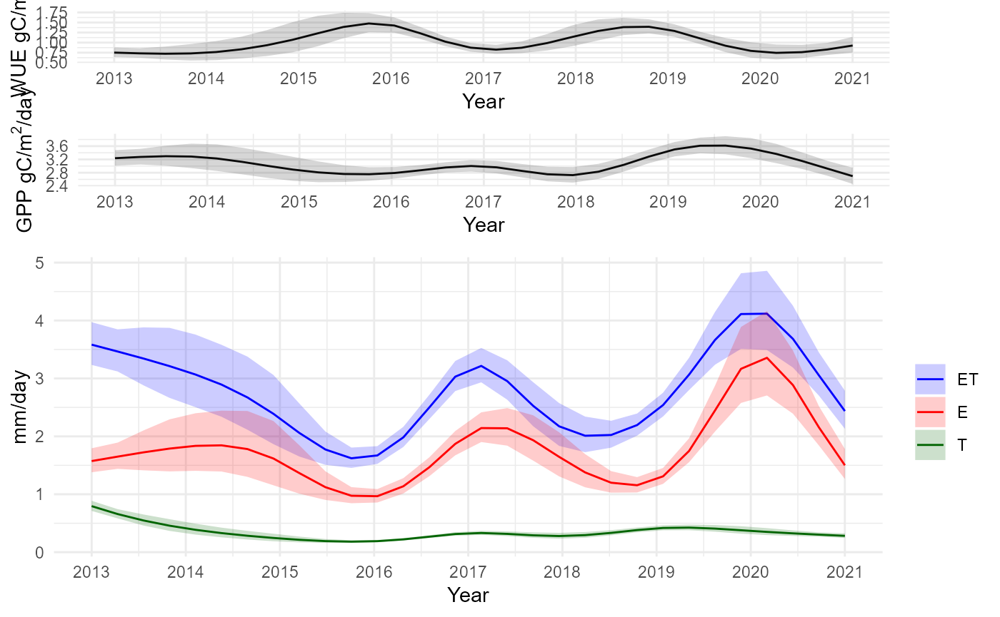
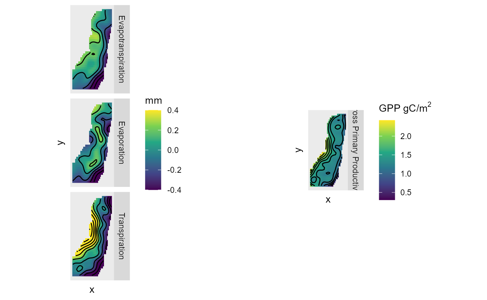

GAMs Magozi
Michael Wellington, Petra Kuhnert, Roger Lawes, Luigi Renzullo, Jamie Pittock, Peter Ramshaw, Martin Moyo, Emmanuel Kimaro, Miguel Tafula, Andre van Rooyen
2022-08-22
GAMs_Magozi.RmdBring in and clean data
We are using pre-prepared data from Landsat-7 and Landsat-8. We will select observations > 0 for GPP, E, T, and ET, and also filter to years greater than 2012. This is because Landsat-8 is required to give sufficient temporal resolution for trend analysis, and was launched in 2013.
Define GAM structure
Next, we define GAM formulae with different lags for rainfall. We will loop through these GAMs to select the best fit. We ended up choosing a 90 day fit as it delivered the lowest residual deviance across many, but not all, schemes. We kept this lag constant
# List of formulae with different time lags for rainfall (30, 60, 90, 120 day)
GPP_f_30 <- log(GPP) ~
# smooth term for year
s(year, bs="cr", k=9) +
# cyclic term for season
s(month, bs="cc", k=12) +
# smooth term for spatial interaction
s(x,y, k=50, bs='gp') +
# seasonal within year
ti(month, year, bs = c("cc", "cr"), k = c(12,9)) +
# space x time
ti(x, y, year, d = c(2, 1), bs = c("gp", "cr"),
k = c(50,9)) +
# rainfall lag
s(chirps_30, bs="cr", k=30)
GPP_f_60 <- log(GPP) ~
# smooth term for year
s(year, bs="cr", k=9) +
# cyclic term for season
s(month, bs="cc", k=12) +
# smooth term for spatial interaction
s(x,y, k=50, bs='gp') +
# seasonal within year
ti(month, year, bs = c("cc", "cr"), k = c(12,9)) +
# space x time
ti(x, y, year, d = c(2, 1), bs = c("gp", "cr"),
k = c(50,9)) +
# rainfall lag
s(chirps_60, bs="cr", k=30)
GPP_f_90 <- log(GPP) ~
# smooth term for year
s(year, bs="cr", k=9) +
# cyclic term for season
s(month, bs="cc", k=12) +
# smooth term for spatial interaction
s(x,y, k=50, bs='gp') +
# seasonal within year
ti(month, year, bs = c("cc", "cr"), k = c(12,9)) +
# space x time
ti(x, y, year, d = c(2, 1), bs = c("gp", "cr"),
k = c(50,9)) +
# rainfall lag
s(chirps_90, bs="cr", k=30)
GPP_f_120 <- log(GPP) ~
# smooth term for year
s(year, bs="cr", k=9) +
# cyclic term for season
s(month, bs="cc", k=12) +
# smooth term for spatial interaction
s(x,y, k=50, bs='gp') +
# seasonal within year
ti(month, year, bs = c("cc", "cr"), k = c(12,9)) +
# space x time
ti(x, y, year, d = c(2, 1), bs = c("gp", "cr"),
k = c(50,9)) +
# rainfall lag
s(chirps_120, bs="cr", k=30)
GPP_fs <- list(GPP_f_30, GPP_f_60, GPP_f_90, GPP_f_120)
#Loop through different lags and test with anova
GPP_Magozi_GAM1 <- bam(GPP_f_30, discrete=TRUE, nthreads=8, data=Magozi_df_nona)
GPP_Magozi_GAM2 <- bam(GPP_f_60, discrete=TRUE, nthreads=8, data=Magozi_df_nona)
GPP_Magozi_GAM3 <- bam(GPP_f_90, discrete=TRUE, nthreads=8, data=Magozi_df_nona)
GPP_Magozi_GAM4 <- bam(GPP_f_120, discrete=TRUE, nthreads=8, data=Magozi_df_nona)
anova(GPP_Magozi_GAM1, GPP_Magozi_GAM2, GPP_Magozi_GAM3, GPP_Magozi_GAM4, test='F')## Analysis of Deviance Table
##
## Model 1: log(GPP) ~ s(year, bs = "cr", k = 9) + s(month, bs = "cc", k = 12) +
## s(x, y, k = 50, bs = "gp") + ti(month, year, bs = c("cc",
## "cr"), k = c(12, 9)) + ti(x, y, year, d = c(2, 1), bs = c("gp",
## "cr"), k = c(50, 9)) + s(chirps_30, bs = "cr", k = 30)
## Model 2: log(GPP) ~ s(year, bs = "cr", k = 9) + s(month, bs = "cc", k = 12) +
## s(x, y, k = 50, bs = "gp") + ti(month, year, bs = c("cc",
## "cr"), k = c(12, 9)) + ti(x, y, year, d = c(2, 1), bs = c("gp",
## "cr"), k = c(50, 9)) + s(chirps_60, bs = "cr", k = 30)
## Model 3: log(GPP) ~ s(year, bs = "cr", k = 9) + s(month, bs = "cc", k = 12) +
## s(x, y, k = 50, bs = "gp") + ti(month, year, bs = c("cc",
## "cr"), k = c(12, 9)) + ti(x, y, year, d = c(2, 1), bs = c("gp",
## "cr"), k = c(50, 9)) + s(chirps_90, bs = "cr", k = 30)
## Model 4: log(GPP) ~ s(year, bs = "cr", k = 9) + s(month, bs = "cc", k = 12) +
## s(x, y, k = 50, bs = "gp") + ti(month, year, bs = c("cc",
## "cr"), k = c(12, 9)) + ti(x, y, year, d = c(2, 1), bs = c("gp",
## "cr"), k = c(50, 9)) + s(chirps_120, bs = "cr", k = 30)
## Resid. Df Resid. Dev Df Deviance F Pr(>F)
## 1 1577876 456635
## 2 1577876 421885 0.216508 34750 600297 < 2.2e-16 ***
## 3 1577876 426888 -0.047776 -5003 391647 < 2.2e-16 ***
## 4 1577876 448811 -0.169712 -21923 483142 < 2.2e-16 ***
## ---
## Signif. codes: 0 '***' 0.001 '**' 0.01 '*' 0.05 '.' 0.1 ' ' 1Run GAMs
Now we will run GAMs on GPP, E,T, and ET. This code chunk is quite long so is hidden in this vignette, but can be found on the GitHub repository.
Plots
Finally, we can plot the annual and spatial trend results.
Magozi_GAMplot <- plot_grid(p, ncol=1, rel_heights=c(0.1, 1))
Magozi_GAMplot
GPP_ET_Magozi_space